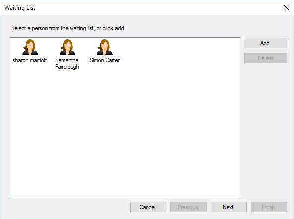

During this stage you can either add a new customer to the waiting list, or edit an existing
customer on the waiting list.

To edit an existing customer you can either select them and click next, or double click. If you
double click the customer you will be taken to step 3 (bypassing the treatment selection).
To add a new customer to the waiting list you can click “Add”.
To delete a customer, select them and click “Delete”, you will be prompted to confirm deletion.